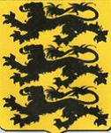

Antavla
523267168767 Adelaide von Diessen

Far:
Berthold II von Diessen (1000? - 1060?)
Mor:
Hidda von Hohenwart (1005? - 1056?)
Född:
omkring 1020 Diessen, Tyskland.
[1]
Död:
Aibling, Tyskland.
[1]
Barn med
523267168766 Berenger I im Nordgau (1005? - 1043)
Barn:
Adelaide (1035? - 1091)
Personhistoria
Årtal
Ålder
Händelse
1020?
Födelse omkring 1020 Diessen, Tyskland
[1]
1035?
Dottern
261633584383 Adelaide
föds omkring 1035 Bayern, Tyskland
[2]
1043
Partnern
523267168766 Berenger I im Nordgau
dör 1043 Aibling, Tyskland
[1]
1052
Barnbarnet
130816792191 Grevinna Adelheid von Sulzbach
föds 1052 Sulzbach, Bayern, Tyskland
[3]
1056?
Modern
1046534337535 Dame Hidda von Hohenwart
dör omkring 1056 Andecs, Tyskland
1060?
Fadern
1046534337534 Pfaltzgreve Berthold II von Diessen
dör omkring 1060 Oberbayern, Tyskland
[4]
1090
Barnbarnet
130816792191 Grevinna Adelheid von Sulzbach
dör 1090 Diessen, Tyskland
[3]
1091
Dottern
261633584383 Adelaide
dör 1091 Sulzbach, Bayern, Tyskland
Källor
[1]
Douglas John Nimmo
[2]
Familysearch
[3]
Bo Garsteen
[4]
wikitree